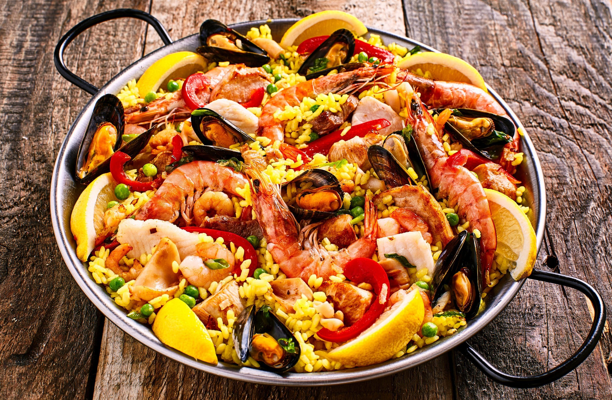

Spanish Paella Recipe

Ingredients
- Produce: onion, bell pepper, garlic, tomatoes, parsley, frozen peas.
- Spices: bay leaf, paprika, saffron, salt and pepper.
- Saffron: this may be the most important ingredient, so it’s best to buy high quality. If your grocery store doesn’t carry it, try an International food market, or Amazon. If necessary, substitute 1 teaspoon saffron powder.
- Seafood: jumbo shrimp, mussels, calamari.
- Chicken thighs: I prefer thighs to breasts in the recipe since they don’t dry out as easily during longer cook times.
- Olive Oil: Spanish olive oil , or any good quality olive oil.
- White wine.
- Spanish Rice: See my notes below about the rice, and possible substitutions.
- Chicken Broth: Authentic paella would include making your own fish stock from the discarded shells of seafood. I usually substitute chicken broth, for convenience.
How to prepare it
- Sauté: Add olive oil to a skillet over medium heat. Add onion, bell peppers and garlic and sauté until onion is translucent. Add chopped tomato, bay leaf, paprika, saffron, salt and pepper. Stir and cook for 5 minutes.
- Add white wine. Cook for 10 minutes.
- Add chicken & rice. Add chopped parsley and cook for 1 minute.
- Add broth. Pour the broth slowly all around the pan and jiggle the pan to get the rice into an even layer. (Do not stir the mixture going forward!). Bring mixture to a boil. Reduce heat to medium low. Give the pan a gentle shake back and forth once or twice during cooking.